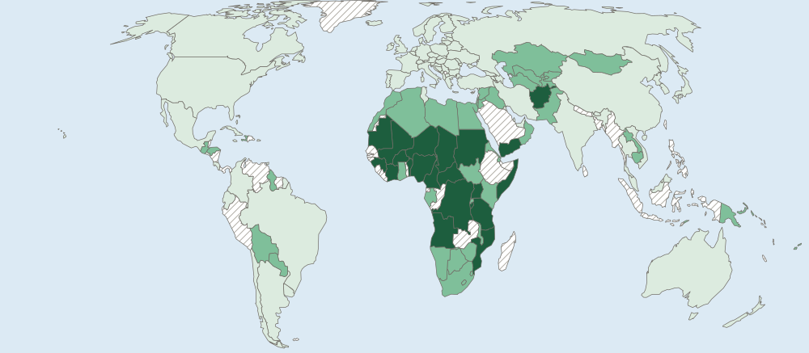

Population Dynamics
A population changes through births, deaths and migration.
Part 1 · Hook
Why this matters
Part 2 · Before you start
What this builds on
Part 3 · Prerequisite check
Quick check before you start
1. A pyramid has a base narrower than its middle bars. What does that suggest?
- Births have fallen
- Many babies are born each year
- Many young adults have moved in
- The population is very large
Show the answer
A constrictive base means recent cohorts are smaller: births have fallen.
- Correct: Births have fallen:
- Many babies are born each year:
- Many young adults have moved in:
- The population is very large:
2. What is a cohort?
- A group born in the same years
- A ratio of males to females
- People per square kilometer
- The part of Earth where people live
Show the answer
Each bar of a pyramid is a cohort.
- Correct: A group born in the same years:
- A ratio of males to females:
- People per square kilometer:
- The part of Earth where people live:
Part 4 · See it
See it first

Part 5 · Step by step
How it works, step by step
- Births are more than deathsthe rate of natural increase is positive and the population grows
- Clean water and vaccines spreadinfant mortality falls and life expectancy rises
- Fewer children die and raising children costs morefamilies have fewer children, so the total fertility rate falls
- The total fertility rate stays below about 2.1each generation is smaller, and the population will shrink unless people move in
Part 6 · Key ideas
Key ideas
- Crude birth rate (CBR) and crude death rate (CDR) are births and deaths per 1,000 people a year.
- Rate of natural increase (RNI) = (CBR − CDR) ÷ 10, in percent. Migration is not part of it. Doubling time ≈ 70 ÷ RNI.
- Total fertility rate (TFR) is the average number of children per woman. Replacement-level fertility is about 2.1.
- Infant mortality rate (deaths under age 1 per 1,000 births) and life expectancy measure health. Social, cultural, political and economic forces shape all these rates.
Part 7 · Misconception
A common mistake
The wrong idea: The rate of natural increase includes people who move in and out, and CBR 30 minus CDR 10 gives an RNI of 20 percent.
What actually happens: RNI uses births and deaths only. CBR 30 and CDR 10 give 20 per 1,000, which is 2 percent. Add migration only when you want total growth.
Part 8 · Check yourself
Check yourself
Exam-style questions. Anything you miss goes into your review queue.
Map
Total fertility rate by country, 2023

Total fertility rate (average births per woman)
- Under 2.1 (below replacement)
- 2.1 to 3.9
- 4.0 or more
- Not shaded (no data, or too close to a class line)
1. Which statement best describes the pattern on the map?
- Highest in Sub-Saharan Africa; below 2.1 in Europe and East Asia
- Rates are highest in Europe and lowest in Africa
- Rates are about the same in each world region
- Rates are highest in the Americas, from Canada in the north to Chile in the south
Show the answer
A strong description names where values are high and low. TFR is 4.0 or more in much of Sub-Saharan Africa (Niger, Chad, Nigeria) and below 2.1 across Europe, East Asia and most of the Americas.
- Correct: Highest in Sub-Saharan Africa; below 2.1 in Europe and East Asia: Right: this names where the high and low classes are, using the legend.
- Rates are highest in Europe and lowest in Africa: this reverses the map: Europe is in the lowest class.
- Rates are about the same in each world region: the map shows three very different classes in different regions.
- Rates are highest in the Americas, from Canada in the north to Chile in the south: most of the Americas are below 2.1.
2. Many countries on the map are below 2.1. If a country stays below 2.1 for decades and no one moves in, what will most likely happen to its population?
- It will double in about 35 years
- It will stay the same size for ever, because 2.1 is a stable level
- It will shrink, as each generation is smaller than the last
- It will grow faster, because each woman has more children
Show the answer
Replacement-level fertility is about 2.1 births per woman. Below it, each generation of parents is replaced by a smaller one, so in the long run the population falls unless migrants arrive.
- It will double in about 35 years: doubling needs a positive rate of natural increase; below-replacement fertility leads toward decline.
- It will stay the same size for ever, because 2.1 is a stable level: staying below 2.1 means fewer births than are needed to replace parents.
- Correct: It will shrink, as each generation is smaller than the last: Right: below replacement level, fewer children are born than are needed to replace their parents.
- It will grow faster, because each woman has more children: a TFR under 2.1 means fewer children per woman, not more.
Data
Birth, death and migration rates in four countries
| Country | Crude birth rate | Crude death rate | Net migration rate |
|---|---|---|---|
| Country J | 38 | 8 | −2 |
| Country K | 12 | 10 | +6 |
| Country L | 9 | 12 | +1 |
| Country M | 25 | 7 | −10 |
Invented data for practice.
3. Use the table. What is Country J’s rate of natural increase, in percent?
Type a number (%). No calculator needed: work it out by hand, as on the exam.
Show the answer
RNI = (CBR − CDR) ÷ 10 = (38 − 8) ÷ 10 = 3 percent. Migration is not part of it.
- Answer: 3 %
4. If Country J’s rate of natural increase stays at 3 percent, about how many years will its population take to double? Use the rule of 70 and round to the nearest whole year.
Type a number (years). No calculator needed: work it out by hand, as on the exam.
Show the answer
Doubling time ≈ 70 ÷ RNI in percent = 70 ÷ 3 ≈ 23 years.
- Answer: 23 years
5. Country K’s rate of natural increase is only 0.2 percent, yet its population grows four times as fast. What explains the difference?
- Its death rate is higher than its birth rate
- The rate of natural increase includes people who move in
- Its total fertility rate is above replacement level
- Net migration adds 6 people per 1,000 each year
Show the answer
Growth = natural increase + net migration. K: (12 − 10) + 6 = 8 per 1,000, or 0.8 percent, four times its RNI of 0.2 percent.
- Its death rate is higher than its birth rate: K’s birth rate (12) is higher than its death rate (10).
- The rate of natural increase includes people who move in: it does not: RNI uses births and deaths only.
- Its total fertility rate is above replacement level: the table gives no TFR, and K’s birth rate is low.
- Correct: Net migration adds 6 people per 1,000 each year: Right: RNI leaves out migration, so it misses the 6 per 1,000 who move in.
6. South Korea’s total fertility rate was 0.72 in 2023 (Statistics Korea, 2024). If it stays near that level and few people move in, what is most likely?
- Each generation will be about a third the size of the last
- The population will double within one generation
- The population will stay the same because the death rate is low
- The crude birth rate will rise above the crude death rate soon
Show the answer
Each woman has well under one child on average, so each new generation is much smaller than its parents’. Without large migration, the population will shrink and grow older.
- Correct: Each generation will be about a third the size of the last: Right: 0.72 children per woman is about a third of the 2.1 needed for replacement.
- The population will double within one generation: a TFR far below 2.1 leads to decline, not growth.
- The population will stay the same because the death rate is low: low deaths cannot make up for so few births over the long run.
- The crude birth rate will rise above the crude death rate soon: with so few births, deaths are likely to stay above births.
Part 9 · Summary
Summary
Part 10 · Up next
What comes next
Part 11 · Connections